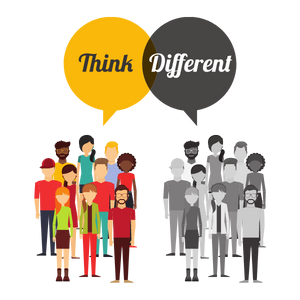

Pengertian Perbedaan
Perbedaan merupakan keniscayaan yang dikehendaki oleh Allah Swt di muka bumi ini. Kitab suci Alquran pun mengakui perbedaan dan menganjurkan manusia menyikapinya dengan bijak.
Motivasi
Kirimkan Kami Pesan
Jika punya saran atau masukan untuk kami,
Silahkan!! dengan cara
lengkapi form berikut ini dan tekan submit